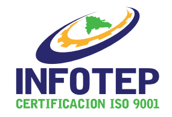

1. Longitud
Una contraseña más larga amplía el espacio de búsqueda. Para contraseñas usadas como único factor, el documento de referencia trabaja con 15 caracteres como umbral moderno de referencia; consulta también la política de cada servicio.

QR1 · APRENDE
Problema inicial: una contraseña puede parecer complicada y, sin embargo, ser predecible o estar reutilizada.
Una contraseña más larga amplía el espacio de búsqueda. Para contraseñas usadas como único factor, el documento de referencia trabaja con 15 caracteres como umbral moderno de referencia; consulta también la política de cada servicio.
Usa una clave distinta en cada servicio. Reutilizar permite que una filtración comprometa otras cuentas.
Evita datos personales, patrones de teclado, repeticiones y sustituciones obvias como P@ssw0rd.
Facilita guardar claves únicas y largas. Protege el gestor con una contraseña maestra robusta y MFA.
Agrega otra barrera, especialmente a correo y cuentas importantes. Prefiere opciones resistentes al phishing cuando estén disponibles.
No cambies solo por calendario. Si sospechas una filtración, cambia las claves comprometidas y revisa sesiones activas.
Piensa en esta comparación: ¿es preferible una contraseña única y larga o una muy compleja que se repite en varios servicios? Justifica tu respuesta.